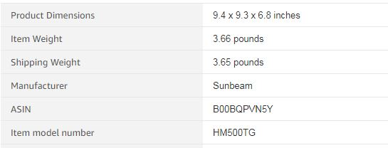
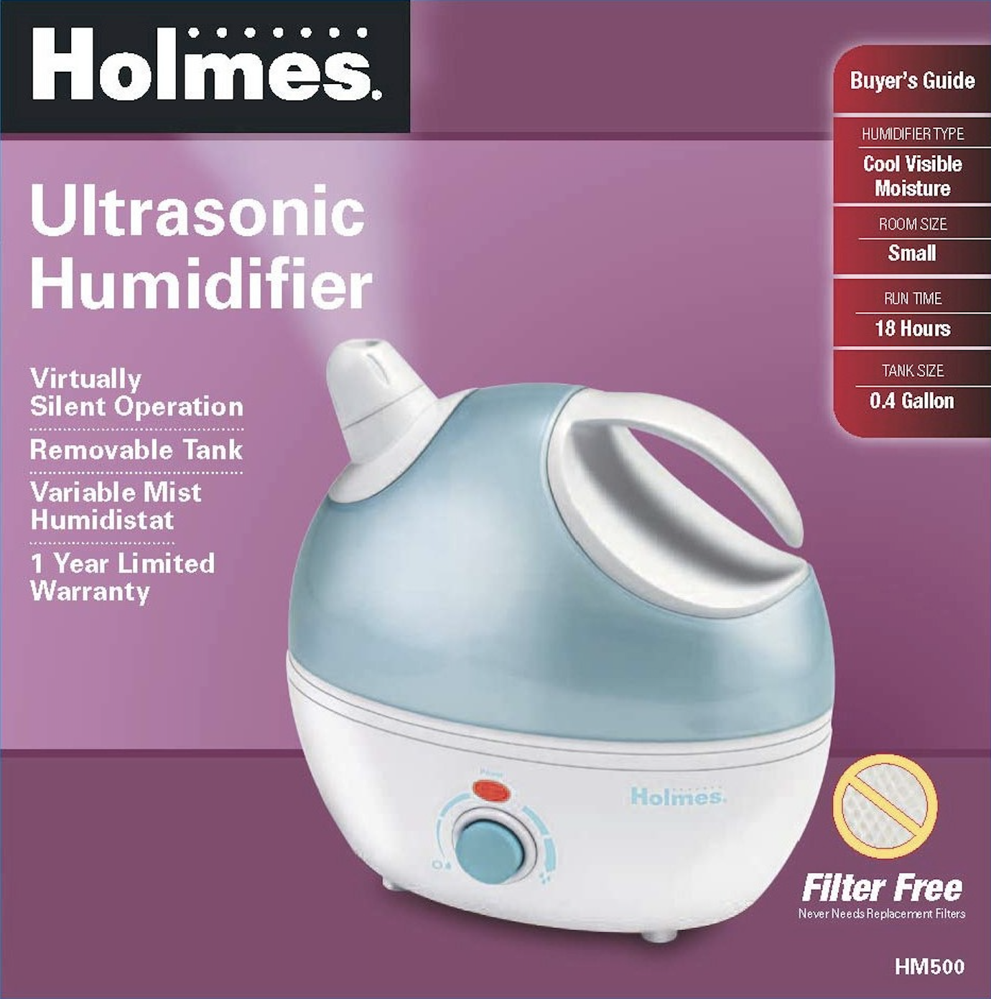
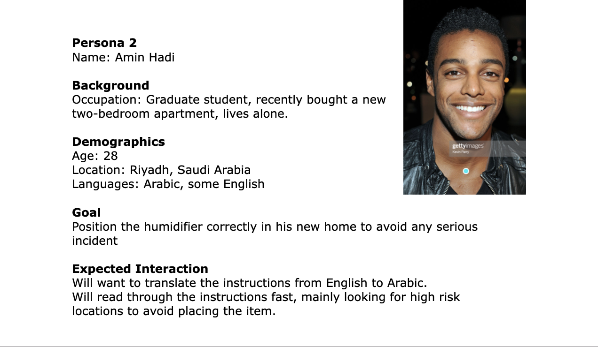
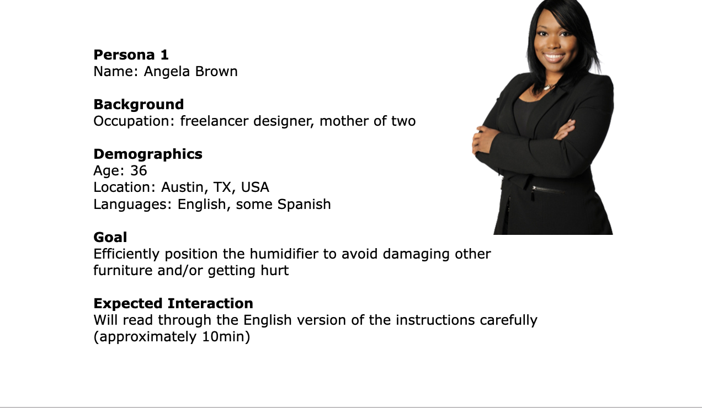
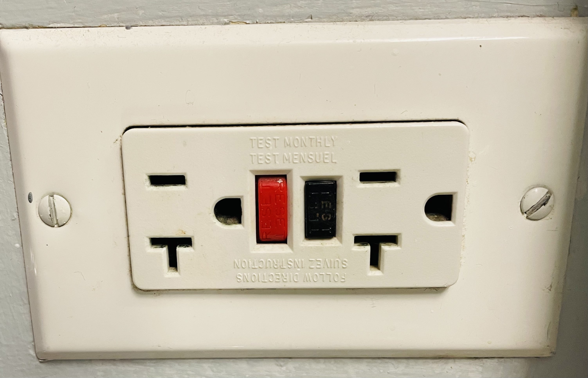
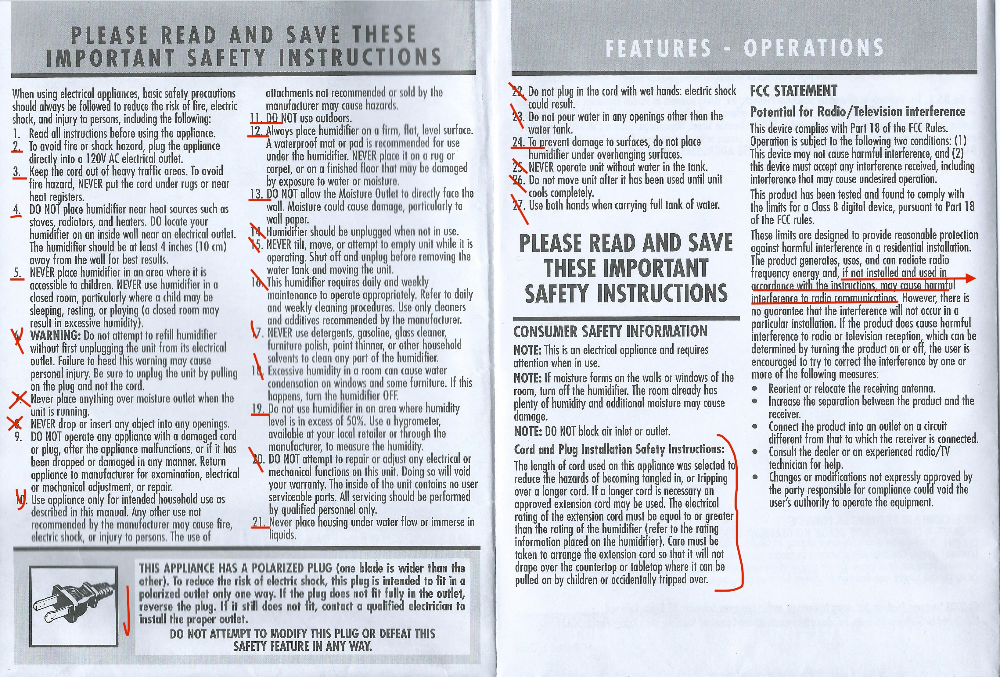

Holmes is a company that produces home-related products. My aim was to make the
positioning instructions for one of Holmes’ products accessible digitally, maintaining Holmes
brand identity and preserving the original copy provided on paper-based instructions for the
same product. I conducted this project on my own.


Research & Design Process
Firstly I looked into Holmes' brand identity. In styling the website
I respected the typographic and graphic choices that make the Holmes brand
distinguishable.
The website I developed aims to make the positioning instructions
for one of Holmes' products more accessible. The website can be accessed by users with
different needs and impairments. It doesn’t require reading, and the positioning process
is guided by icons or simple pictures.
My next step was to review the information available on the paper-based instructions,
selecting the content that would be most relevant to creating instructions specifically
aimed at positioning the product. Afterwards, I focused on the colors and fonts that would
match Holmes well-established brand identity. I created a stylesheet including these
essential elements.
Competitive Analysis
Websites providing instructions are varied in essence, so I conducted
research on two relevant competitors in the home products field. In particular,
Ikea’s
instructions
served as a basis for me to understand the importance of having minimal,
non-ambiguous and easy-to-understand icons in my final version of the instructions.
which proved that staying minimal and entirely visual,
while necessary to accomodate the needs of a diverse audience, is probably not the best
possible way to approach a website entirely dedicated to instructions.
Personas
I developed two user personas on which my work was based. The two profiles provide an
overview of two general categories that I identified as potential users of the intructions.
The two personas below have their differences, especially with their time availability
in an inverse relationship with the possibility of them misplacing the item.


Iconography
Following best accessibility practices I decided to build the website in a way that
even without reading a single word one could benefit from the instructions, while making
written descriptions of each step available with one click. I chose minimal icons that
disambiguate the tasks users are required to perform to position the product effectively
and safely. The icons were picked from free-stock png websites. Some of the icons were
also subsequently modified by me using Google Drawings.

Development
The website is fully translatable.
One pain point of the paper-based version of Holmes instructions is exactly that of not being
universally understandable,
as only a finite number of languages can be provided. A
digitization of the instructions allows for increased reach and accessibility.

I had two people testing out my website before reaching the final stage of the product.
I used
GitHub
for version control and worked on several branches to keep working while my
website was being tested by my users through GitHub Pages.
Learnings
The most challenging part of the project was building the website in a way that reading was not
essential to the user experience. In the process of following instructions users are in all
sorts of mental states and physical conditions. Making the website as straightforward as
possible was a necessity, but providing additional text for those users who want to spend more
time and increase the accuracy of the positioning task was also essential to the project.